FiftySix
This page is a guide to learning
Ali Farke Toure's song
FiftySix on a tapping instrument such as the
Chapman Stick or the acoustic Dragonfly DFA.
There is a score/tablature, fretboard diagrams, and
(to be done) youtube video instructions, that will help you along the
way.
A bit of background about the piece
-
Wikipedia Entry
- Take a listen to a few versions of this piece.
This version by the illustrious Derek Gripper, is what
I loosely based this transcription on
Musescore score with tabs
The Score (and tabs) to go along with the diagrams below is available
Here
even if you can't read music well (or at all), Bringing up the
score is very useful. I can't emphasize this enough... why?
- you can play/loop a range of measures (phrase) in the score
- view the diagram associated with those measures
- play along with the loop until you've got the phrase down
Even if you don't use the same tuning as the one the score/diagrams.
the shapes in the diagram will generally be the same. so you
can go a long way with those resources even with a different
tuning
Throughout the instructions i also have links to Musescores
that contain broken out parts of the main score to make it
easier to bring up and loop on
Some tips
-
The piece is in Bb Major (G minor) throughout.
-
It doesn't figure in the intro, but once you tackle that,
muscle memorize the bass "loop phrase" until you you can
play it without thinking about it (it's just three notes)
You can also just put this phrase in a looper as it runs
thoughout the entire piece after the Intro Section.
Bass loop phrase

Intro
Traditionally, the intro is improvised. Here's
an example one
In the score, I have written out an intro section for use use
as a starting point. I've diagrammed some of the bass chords I
tend to use when improvising the intro section you may find
useful. These chords are used in the written out intro. You'll
want to get comfortable moving between them. They typically
arpeggiate upwards.
Intro: Primary Bass Chords
Intro: Additional Bass Chords

Intro: Phrase resolution chord.svg
I tend to use this Bb drone chord (Root Octave Octave+5) at the
end of a phrase in the Intro/Iprov section when i want to
resolve/emphasize back to base Key (Bb) of the song
Intro: Bars 1-4
Bring up the
score
and use the loop button to the right of the play [>]
button to set the start measure to 1 and end measure to 2. Then
use the play button to loop those two bars. Use this procedure
for each diagram as you go.. You can use the slider next to the watch
icon to slow down the loop.
Intro: Bars 1-2
Intro: Bars 3-4
This fingering allows you to hold the last three notes. Sliding
down into A from Bb is a nice ornamentation.

Intro: Bars 5-8

Intro: Bars 5-6
Intro: Bars 7-8

Intro: Bars 9-10
Play the full chord on the Cm7 and arpeggiate the Bb drone chord.
On a 'Classic' tuning you'll have to move the pattern down one
string and 5 frets closer to the bridge to avoid clashing with
the CM7 bass chord

On to the Song Proper!
Keep in mind, in this song you can slice and dice the order of
all the different riffs as you like. Each riff in the score
is marked with a letter marker
Part A
The musescore
for part A
Part A is a riff that you can repeat as you see fit. If you are
playing with a drummer you might want to vamp on it and let
them have an introductory bit of solo-ing over it.
It also doubles as good way to practice to get that Bb Eb -Bb
bass riff down pat, as the rest of the song gets a bit more
challenging after this section and this riff continues on
thoughout the song.
Part A: Bars 1-4
Part A: Bars 5-8
Part B
The musescore
for part B
For the rest of the song, the Bass side just plays the Eb Bb -Bb
"motor" pattern thoughout the song, so i'll leave out the bass side
of the diagrams from here on out for conciseness.
note the (notes, notes, notes) format in the diagram captions
below. The two commas group the notes into the 3-3-2 rythmn pattern
of the song
Part B: Bar 1
Part B: Bar 2
Part C
The musescore
for part C
Part C: Bar 1 and 3
Same phrase in both bars
Part C: Bar 2 and 4
Same phrase in both bars except for last note
Parts S & E
The musescore
for parts S & E
Part S: Bars 1-2
Second bar is a rest
Part S: Bars 3-4
Same phrase in both bars

Part E: Bars 1-8

Part F
The musescore
for part F
Part F: Bars 1-2
Part F: Bars 3-4
Same as 1-2 except last note is Bb

Part G
The musescore
for part G
Part G: Bars 1-2
Part G: Bars 3-4
Part H
The musescore
for part H
Part H: Bars 1-2
Part H: Bars 3-4
{kind=link}
{kind=link}
{kind=link}
{kind=link}
{kind=link}
{kind=link}
{kind=link}
{kind=link}